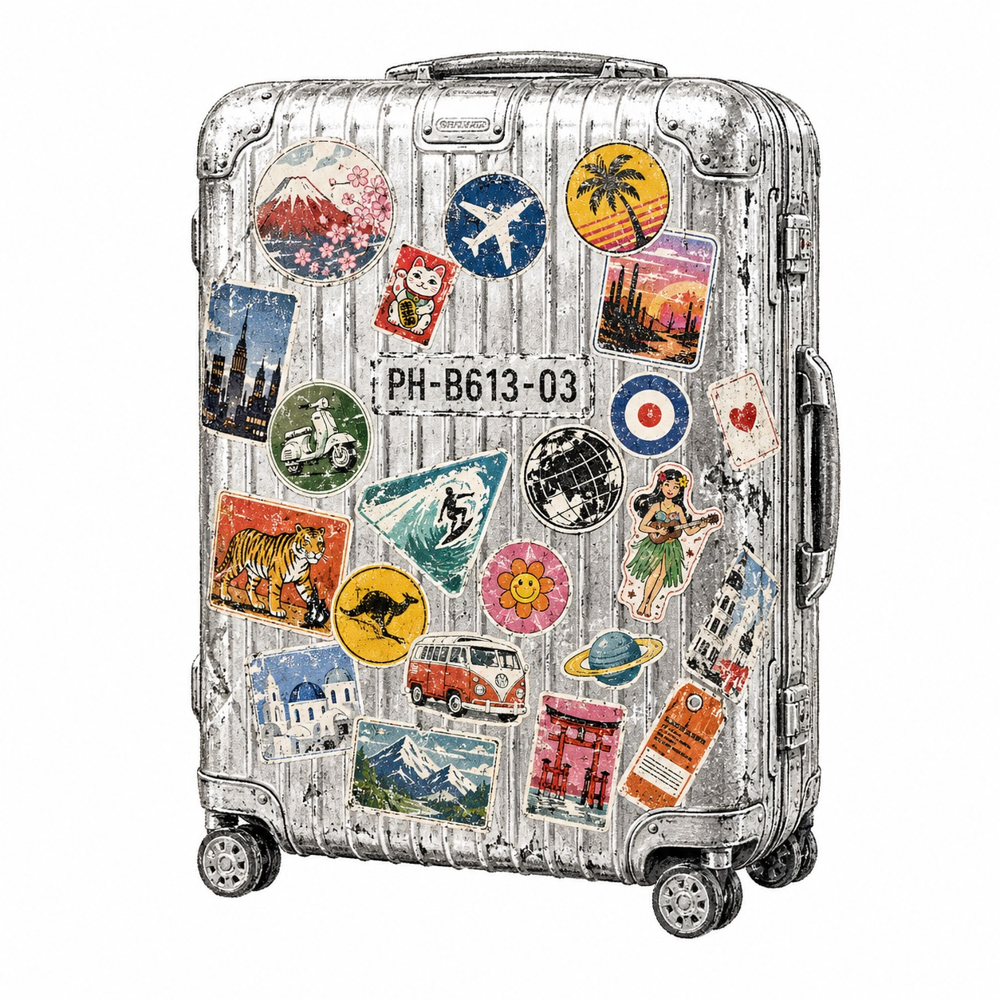

걷는 방향
앞모습이 아니라 어디로 걷는지가 중요하다.
여행별에서 사람은 카메라를 향해 서 있지 않아도 된다. 어디론가 가는 뒷모습이면 충분하다.
여행별 · LPH-B613-03 · HAM MEDIA 별자리
다시는 갈 수 없는 길

01 · 곁에 있던 색
새벽 역의 푸른 회색, 손에 쥔 종이표, 낡은 캐리어의 갈색, 창문에 낀 흐린 공기. 여행별의 색은 멀리서 가져온 색이 아니라 그때 곁에 있던 색입니다.
#4f6472아직 밝지 않은 역. 말보다 먼저 몸이 움직이던 시간.
#f3ead8표처럼 접히고, 편지처럼 남는 밝은 종이.
#7a5230캐리어 손잡이와 오래 든 가방의 온기.
#c7d0cf창밖을 볼 때 생각도 같이 흐려지는 색.
#6f777c플랫폼의 선, 철로의 선, 어디론가 이어지는 선.
#d7a64a지금 움직이라고 말하는 작은 불빛.
노란빛은 금빛 장식이 아니다. 어두운 역에서 한 번 켜지는 신호다.
02 · 말의 리듬
여행별의 말은 길게 설득하지 않는다. 움직이라고 말할 때는 짧게, 왜 움직였는지 말할 때는 천천히 읽힌다.
별 이름
짧고 굵은 말
남는 문장
본문
익숙한 자리에서 한 발 물러나 다른 사람의 자리로 가보면, 같은 장면도 다르게 보입니다. 그래서 콘텐츠도 결국 자리를 옮기는 일입니다.
03 · 별 안으로
표를 들고, 문을 지나고, 아직 완성되지 않은 지도를 본다. 목적지가 아니라 움직이는 마음을 따라가는 입구입니다.
이 표는 목적지를 증명하지 않는다. 한 자리를 떠나 다른 생각으로 넘어간 시간을 남긴다.
여행별에서 사람은 카메라를 향해 서 있지 않아도 된다. 어디론가 가는 뒷모습이면 충분하다.
모든 길을 다 설명하지 않아도 된다. 어디에 서 있었고, 누구와 움직였고, 무엇이 달라 보였는지가 쌓이면 여행별의 지형이 드러난다.
여행별 · 문장
문장
춘천 · 펜션 · 강

낯선 곳에 머물면 생각의 방향도 조금 바뀐다.
차를 세우고, 짐을 내려놓고, 창밖의 물길을 바라보던 시간.
문장
서해 · 바다 · 팬데믹

바닷가를 걸으면 멈춰 있던 생각도 조금씩 움직인다.
그 시절의 공기와 거리감이 아직 사진 안에 남아 있다.
여행별 · 장면


관계의 지도
자세한 루트맵을 꾸며내지 않습니다. 어디에 서 있었고, 누구와 움직였고, 무엇이 달라 보였는지가 쌓이면 여행별의 지형이 드러납니다.
04 · 보이는 것
여행별의 사진은 명소를 증명하지 않는다. 어디에 서 있었고, 그 자리에서 무엇이 달라 보였는지를 남긴다.
건물, 하늘, 길, 차가 함께 들어간 장면. 멋진 장소보다 그날 서 있던 자리가 먼저 보입니다.
앞모습이 없어도 된다. 어디로 걷는지가 보이면, 그 사진은 이미 여행별의 문장입니다.
05 · 이 별이 권하는 것
여행별은 떠나고 싶게 만드는 광고가 아니다. 잠깐이라도 다른 자리에서 생각해 보자는 말입니다.
전문가의 자리에서 보던 걸 청중의 자리로 옮겨 보는 일.
이 별은 HAM MEDIA Design MD 방식으로 정리한 세 번째 별입니다. 자리를 옮기면, 문장도 사진도 다르게 보입니다.
07 · STARS
이 별은 HAM MEDIA Design MD 방식으로 정리한 세 번째 별입니다. 자리를 옮기면, 문장도 사진도 다르게 보입니다.